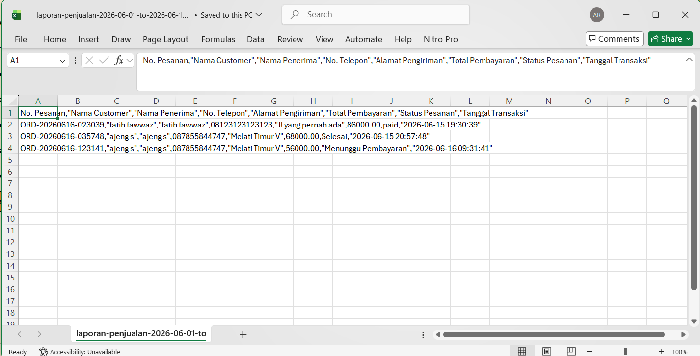

Week 15: Fitur Reporting
Deskripsi
Fitur Reporting pada dashboard admin MieME memungkinkan admin melihat statistik penjualan dan mengekspor laporan transaksi dalam format CSV sesuai rentang tanggal yang dipilih.
Fitur Utama
- Admin dapat memilih tanggal mulai dan tanggal selesai untuk rentang laporan.
- Export report disajikan dalam format CSV yang dapat dibuka dengan Excel atau Google Sheets.
- Laporan CSV mencakup data transaksi seperti nomor pesanan, nama customer, alamat pengiriman, total pembayaran, status pesanan, dan tanggal transaksi.
Penggunaan
Pada halaman Reports admin, pilih rentang tanggal yang diinginkan lalu klik tombol Unduh Laporan CSV. Sistem akan mengunduh file report sekaligus menampilkan ringkasan data penjualan.
Gunakan akun admin: admin@mieme.test / admin123.
Visualisasi

Dashboard reporting admin dengan filter rentang tanggal.

Contoh output file CSV laporan penjualan.